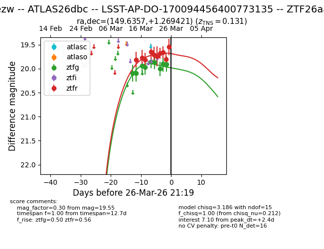
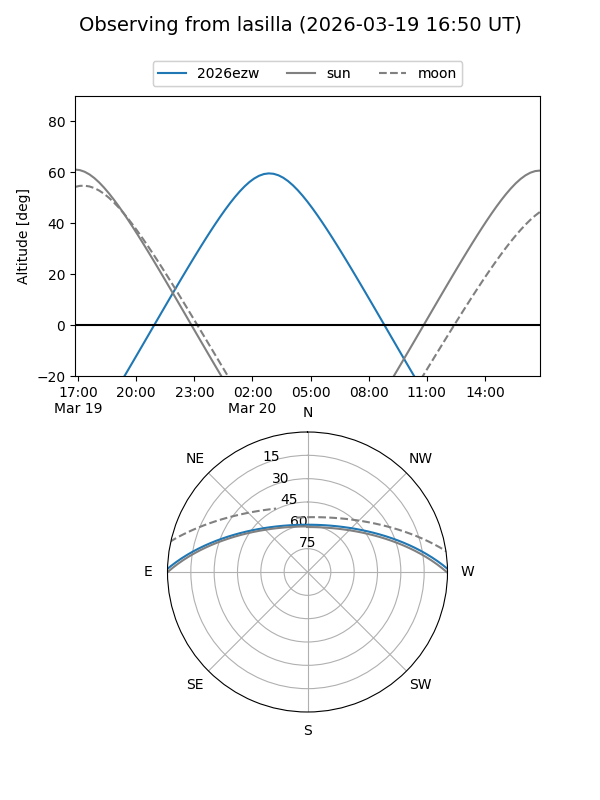
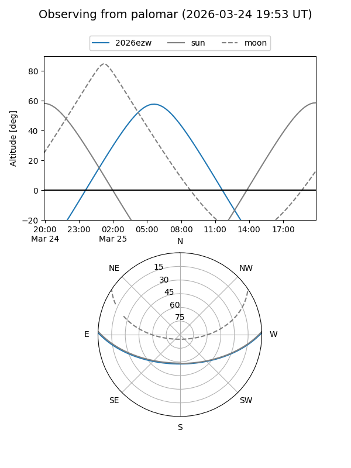
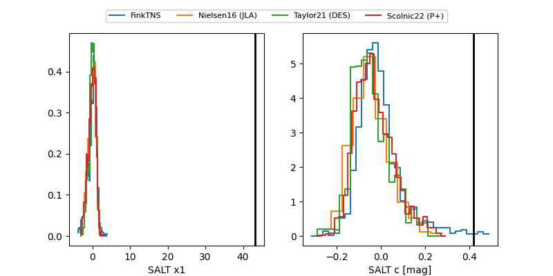

2026ezw
Target 2026ezw at 2026-03-26 21:21
Aliases and brokers:
FINK: link
Lasair: link
ALeRCE: link
TNS: link
YSE: link
alt names
ZTF26aalcavs (ztf,fink_ztf)
2026ezw (tns,yse)
LSST-AP-DO-170094456400773135 (lsst)
ATLAS26dbc (atlas)
Coordinates:
equatorial (ra, dec) = 149.6357,+1.26942
equatorial (HMS+DMS) = 09:58:32.57,+01:16:09.92
galactic (l, b) = (237.4626,+41.18278)
Flags:
confirmed ia
Photometry:
last ztfg=19.90, ztfr=19.55
9 ztfg, 10 ztfr detections
Lightcurve

Visibility


Additional plots
